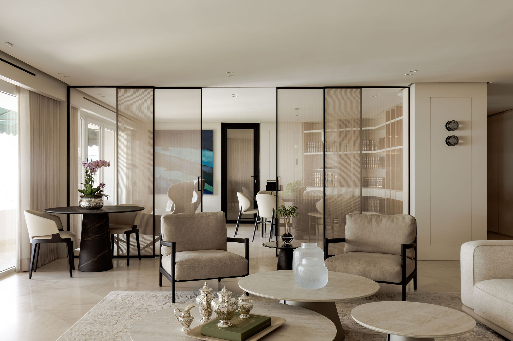
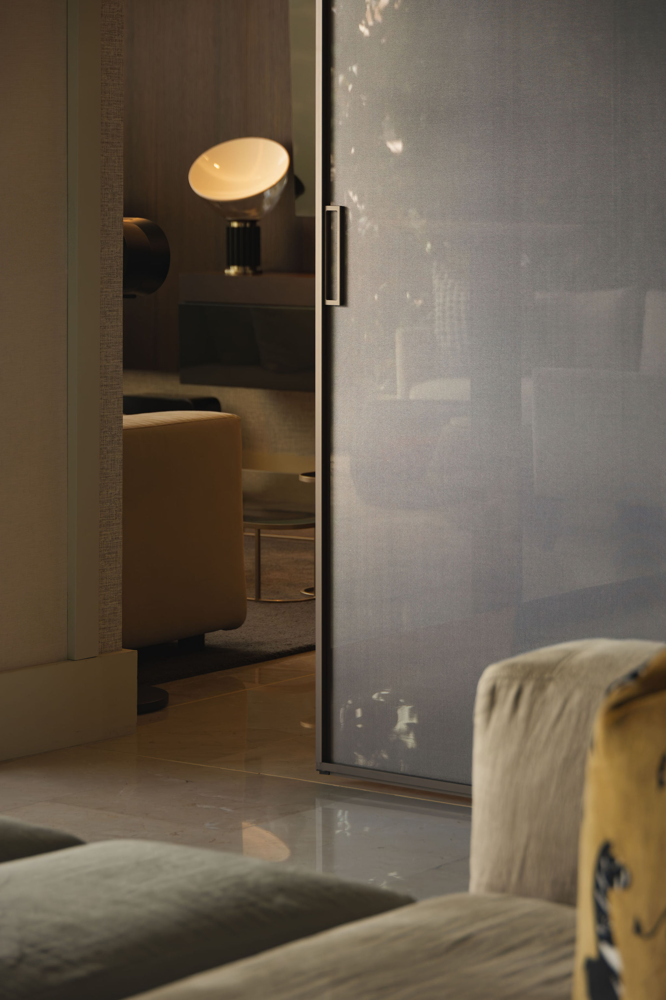
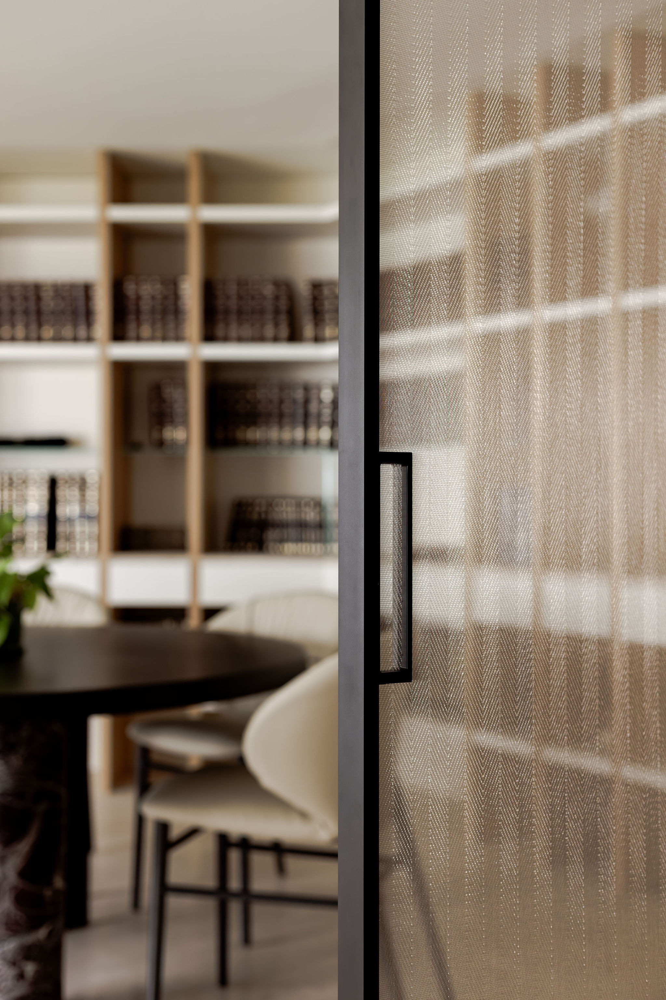
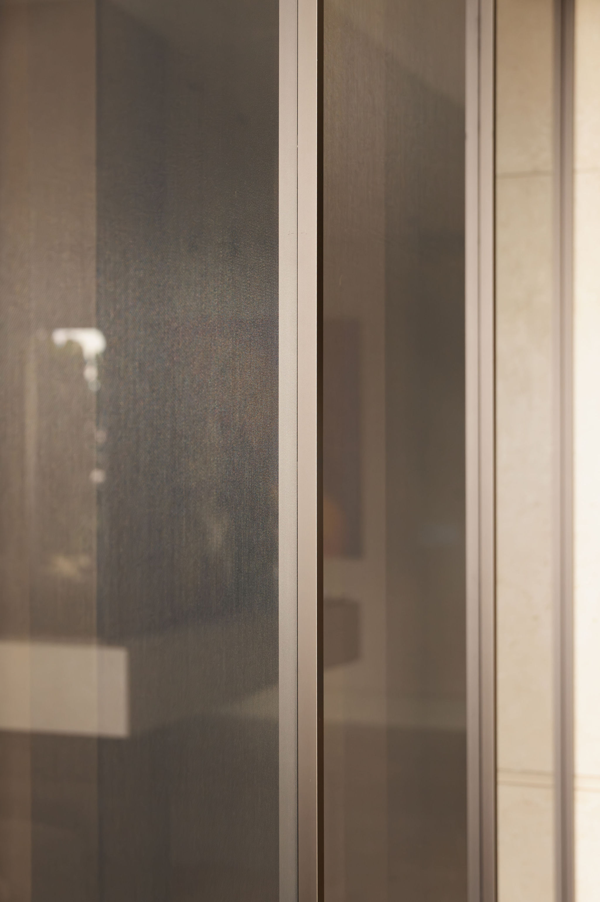
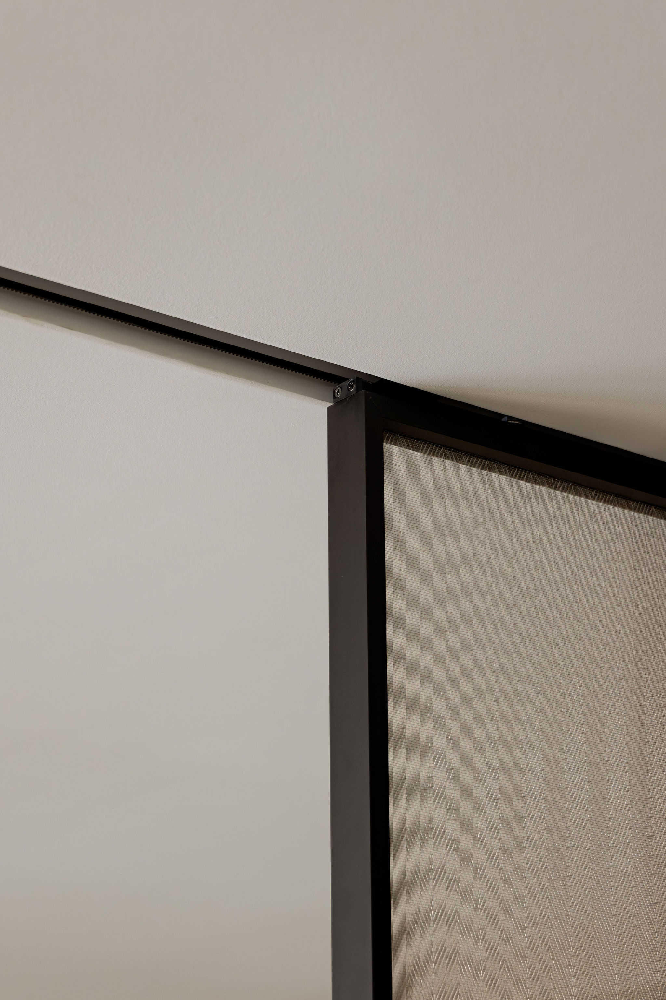
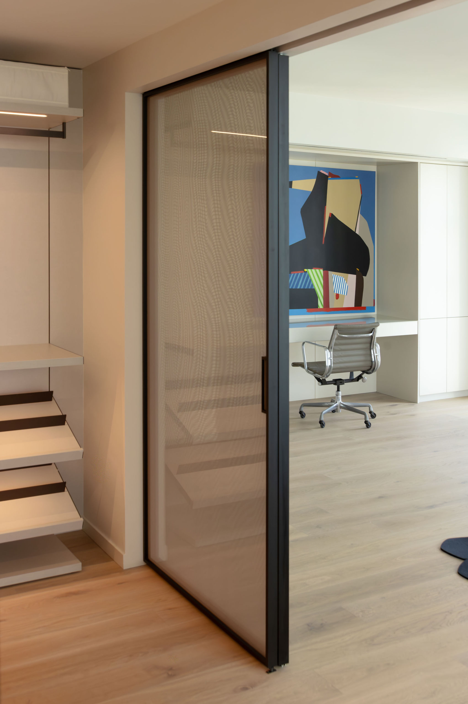

Luz hecha mobiliario
Mesas, consolas y mesitas en vidrio templado de color sólido. Piezas que llevan el mismo vidrio de nuestra arquitectura del umbral al interior — y convierten la luz en color habitable.


No encontramos piezas para esa búsqueda.
El mismo vidrio que define nuestros sistemas — laminado, templado, teñido en masa — llevado del umbral al interior. Superficies que filtran la luz y proyectan color sobre cada ambiente.
Perforata
Capas de vidrio teñido que se superponen y multiplican el color con la profundidad. Un volumen sólido que, a contraluz, se vuelve translúcido.
Biplanar
Dos planos de vidrio que se cruzan en voladizo. Una consola que parece sostener su propio reflejo — estructura y superficie en el mismo gesto.

Console Table
Una consola que parece sostenida por la luz. Planos limpios, cantos pulidos y un perfil que casi desaparece contra la pared.
Arlecchino
Un mosaico de color en vidrio templado — homenaje al arlequín. Cada cara enfrenta un tono distinto y la pieza cambia con cada paso alrededor.
El vidrio habita el espacio

Sala




Dormitorio
Tres formas de teñir la luz

Azul · Amarilla
Mesita de noche
Azul · Roja
Mesita de noche
Morada · Naranja
Mesita de noche¿Una pieza para tu espacio?
Cada pieza se fabrica a medida — color, dimensión y acabado. Cuéntanos tu proyecto y diseñamos el objeto de vidrio que le corresponde.